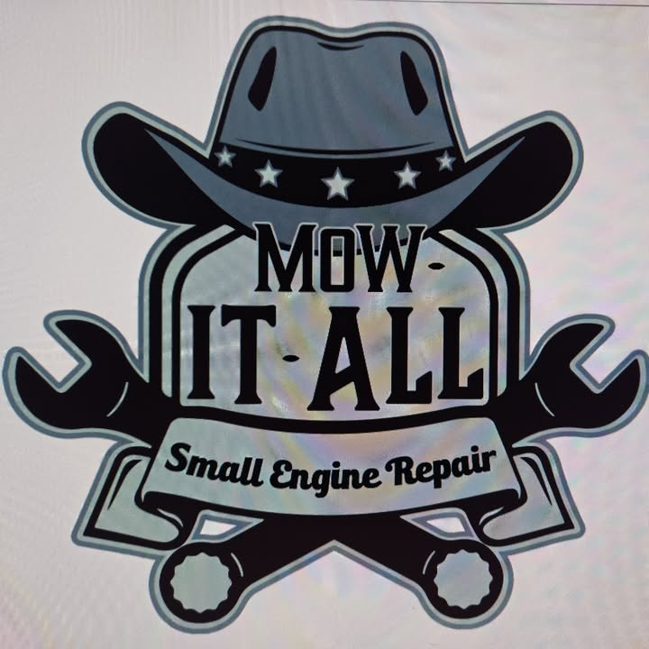

Mower repair
Push mowers, riders and stand-on mowers brought back to life.
Ask about mower repair →
Mow-It-All RepairHonest small engine and mower repair in Lenexa from Larry, who often talks you through the fix before you even bring it in.
Push mowers, riders and stand-on mowers brought back to life.
Ask about mower repair →Carburetors, tillers and other small engines.
Ask about small engine work →Reliable upkeep for lawn care crews with multiple machines.
Ask about fleet maintenance →Larry got an old Cub Cadet running again after several mechanical issues, and even picked the mower up.
A lawn care company with 15 machines calls him their go-to mechanic: quick, professional and done right the first time.
| Mon–Fri | 5–9 PM |
|---|---|
| Saturday | 9 AM–12 PM |
| Sunday | Closed |